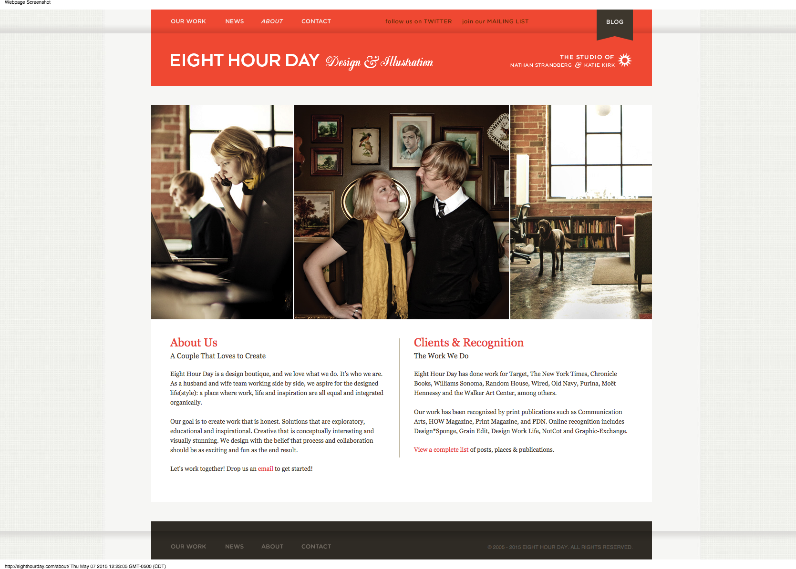

Here is a beginning of components I would like to see in my library. One thing I have realized is that there is no way this can be done in a couple of days. And in fact, it should be an ongoing process. A few thoughts if I may... I would have two categories of libraries; one for "everyday" use and one for "inspirational" use. Inspirational being those projects that may not be normal and allow for stretching the envelope, which is what I want to do. Most of my filed away inspirational sites are just that, for those are the reason I am working so hard. I don't want to develop just the run of the mill sites, though I know we have to. But I will develop sites that push the boundaries and edges as they are so deemed. It is for this, that I am working so hard, those types of sites, are my inspiration.
Following is a beginning list of the sites I used in order to gather examples so far.
This is an example of a full-image background landing page that is being widely used. It is beneficial in the design and development of a more simple and minimalistic design. Personally I like the use of these with both the "hamburger" menu icon and/or the use of a bottom navigation bar. I am not convinced video as a background is the way to go yet for a broad targeted audience due but the time is coming close when I think it could be used more mainstream. So for now, on the mainstream I would rely on just an image rather than a video. I also like the use of this type landing page layout to come up with more unique navigational methods. This is often the starting point for parallax scrolling, which needs to be used very carefully. In many viewers, the "fun" aspect of parallax can cause dizziness and vertigo and is completely not a good user experience. One site I am showcasing for some other components, uses parallax and when you use the navigation the pages fly by so fast it almost gives you a headache. To me, these are bad uses of parallax and make for a bad user experience.
The font is clear and legible utilizing the font-family: "Avenir", Futura, Helvetica, sans-serif. The white font works well on the background. The navigation bar here looks nice, though it is rough in other places of the site as addressed later. It also offers two ways of navigating; one through the pie menu which is available everywhere and through the more detailed top bar.
The target audience is the individual or company looking for a video hosting service.
Mundial Landing Page
This is a perfect corporate landing page. Beautiful picture, relevant phrase describing their philosophy and who they are, pie menu which will be shown further down the page. It's not cluttered and you know who they are when you land. Honestly the only thing I didn't like about this site as a whole is the fact that it is an example of one of the parallax sites that utilize "windows" and in the fast scrolling it can be a bit visually disconcerting to a segment of users.
JetSetter - Landing Page
This page actually makes it onto a few categories, the JetSetter website landing page is terrific. (follow with more) As well, it fits in my footer category, CTA category and navigational categories.
Examples of Headers
Wistia Top Nav Bar on Landing Page
Overall I like the concept of this nav bar. Unfortunately this company is not utilizing it consistently. It also is very easy for the user to get lost when inside the the site. They have a few ways of navigating around between the pie menu, which I think is excellent as well as the top nav bar. The lack of breadcrumbs inside is a huge issue though nor is the nav bar consistently transitioned in a way that reflects the user's position within the pages.
As can be seen the top nav bar consists of two layers of Main Categories which then display the sub-category options when the page changes, rather than having them within in a drop down. There are studies that show that users aren't that fond of drop boxes, especially as they get more and more complex, so I believe this is a clear simple option.
Full Page Pie Menu
I do like the way the "hamburger" opens up to a full page detailed, clear and concise menu options, with an easy close and very legible, leading the way to all areas of the site. However, is full-page a bit of overkill? Perhaps so, the empty blue space to the right side is large and I am not a fan of it, though I understand the desire to not have it be a half-page either. In this case it is a matter of personal opinion and tastes, in which case would fall to the client.
Wistia Top Nav Bar from the Products PageWistia Top Nav Bar from Learn Page
Here you can see the Top Nav Bar from the products page showing the lack of detail as to where the user is. If you look close you can see the tab flows into the page, but with the only differentiation being a very thin border line, there really should be greater differentiation in appearance. Honestly, by looking at the blue button I'd think that was the active element, but it is not. The whole set up overall has a lot of potential, and I like it. I will definitely re-work it to make it more consistent. I use a lot of elements from this site and it can be visited at their website located at Wistia.
Mundial Pie Menu
This is the pie menu from the Mundial Asset Management Group. This is the layout I like to see. It is balanced, easy to read font of a legible size. Short Phrases, not a lot of clutter and readily accessible from where ever you are in the site. The site overall is just lacking a trail of "where am I" visuals. I find it a bit funny how much I notice that now, I never knew how much I relied on them until I learned what they were. Now I notice instantly when they are not there. The breadcrumbs could go down the side vertically much like the dots so that they are not intrusive upon the minimalist layout.
JetSetter - Landing Page
This page actually makes it onto a few categories, the JetSetter website landing page is terrific. (follow with more) As well, it fits in my footer category, CTA category and navigational categories.
This page actually makes it onto a few categories, the JetSetter website landing page is terrific. (follow with more) As well, it fits in my footer category, CTA category and navigational categories.
Examples of Features
Wistia Features Page
This is the features page of the Wistia site. Despite the fact it is parallax I like the way they have it set up. There isn't any of the "window" type features that tend to bring on the dizziness feeling. It's all the same background and divided into three sections. These sections are one for each of the three different plans and goes into details for each. There is some fast scrolling which I might personally slow down a bit but with the solid background it is not that unpleasant. The only color differentiation in the background is that for the second plan they go from a white background to more of a grey which helps call it out as a different section, if you were to scroll through the page manually.
The Nav Bar for this page is positioned beneath the photograph up at the top of the page which when loaded would be the bottom of the visible page. With this navigation they are utilizing icons which to me is another example of ux inconsistency. The site as a whole has a definite issue with consistent user interactions and experience. However we are looking at components and so far as that goes, there are many of those that hold promise in so far as being utilized if in a bit of a different manner.
JetSetter Features
This is another example of a decent parallax site. What I like is the way they have their features spread out down the page. It's not just a blase` list of features, but short sections with images and links to each one such as "Magazines", "What's Trending", and "Collections".
Examples of About Pages
Mundial About Us Page
What I like about this about page is that there is nothing fancy or pretentious about it. It simply states whom they are, what they do and gives a way of contacting them. It's nicely laid out and honestly, I wonder if we really need to go to a whole separate page or if we could just do this in a modal so that the user does not have to navigate off the page. It does have breadcrumbs there at the side, the small vertically aligned dots. This is a very professional looking site in my opinion.

About Us Page - 8 hours
This About Us example is a terrific example of bringing a personal touch into the cold environment of company and business websites. It draws the user into it, rather than feeling like they are looking in through a cold window.
Examples of Blog Pages
Wistia Blog Site
I definitely am not impressed in their blog site and use this as an example of what I don't want to see or do. There is no consistency in the image sizes floated to the right, which would just annoy me. As well, the broken nav bar up at the top of the page. The lack of blog entry summaries bothers me as well. It is hard to know what the article is about or why I should go read it. There needs to be a "teasing" beginning read of at least the first paragraph or some type of compressed "what this article is about" so that the user has some way of knowing if this is an article worth reading. They are not going to click on every article to browse through it. People do not read like that anymore.
Blog at Hyken.com
This is an excellent example of a blog being used to post relevant articles for the customers that relate to what the company and services are about. Each post is clearly defined so that one knows what it is about without having to go to the actual article, thus enabling browsing rather than back and forth clicking, giving the user the option whether to go or not.
Examples of Contact Pages
Mundial Contact Page
I will be honest, I have fallen in love with this contact page. It has a nicely set up submission form but as well a wonderful map for those who need to know the physical location. Address and phone number are neatly displayed in the footer. I will be utilizing this format.
Examples of Login/Registration Pages
Wistia Log in PageWistia Registration Page
I like the formatting and layout of the log in page. Many clients would like a social networking capability to log in as well, of which I will find an example of. I also would modal this rather than going to a separate page. But I like the layout. Simple and effective.
The Registration page I would also put in a modal, the background actually has some patterns that look like they are clickable, but rather they are just part of the background image which is confusing. I do like the simplicity of their sign up process though. I believe the initial sign up should be kept simple, details can be filled in within the account settings once the CTA has reeled them in and they actually have registered with the site.
Examples of Footers
Mundial Footer
Footers the way I like them, short and to the point, clear and concise. I do not think the footer is the place for a complex navigational system.
Examples of Unique Navigation
Avideh Landing PageAvideh Navigation
When the user uses the pie menu in the first picture, the navigation pops up in the middle of the page in a dynamically unique, yet simple manner. I love the uniqueness and this will definitely be hitting my library. This is from the Avideh Marketing site, a site I have had bookmarked for a long time now.